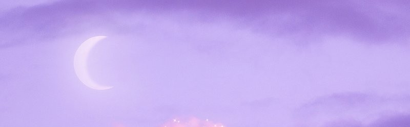
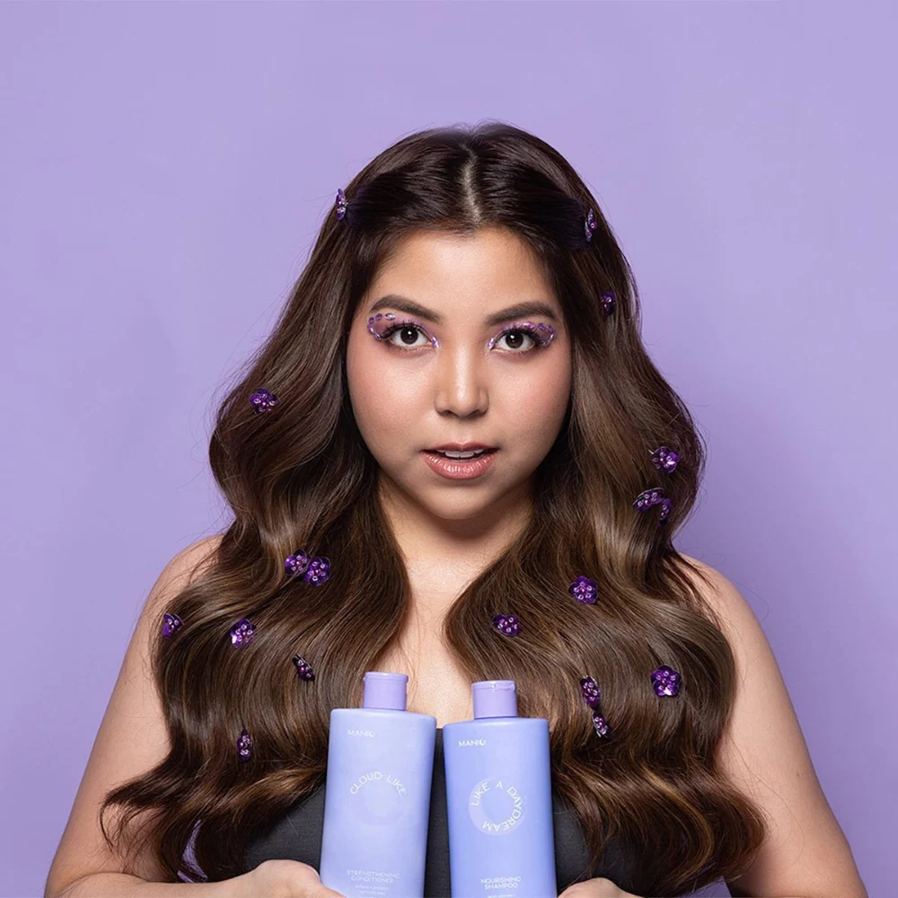

About us
Manic Beauty is a Philippine-based beauty brand that sells a wide range of products, including hair care, sun care, bath and body, face makeup, and lip makeup. The brand emphasizes self-care and aims to express a person's individuality through its products.
For over a decade, we’ve pursued a bold idea — what if an ordinary earbud could quietly reveal more about how your body responds to everyday life? That vision has helped open a new frontier in ear based physiological sensing: continuous, ear worn insight into your body’s signals — effortless, unobtrusive, always with you.”

Founder of Manic Beauty
Social media personality and YouTuber known primarily for her comedy skits and dancing videos on her self-titled nicole.caluag TikTok account, as well as her vlogs on her Nicole Caluag YouTube channel. She has accumulated over 58 million views on her YouTube channel.
Before fame, she first launched her YouTube channel in May 2017, and gained 1 million subscribers in a year. She began posting on TikTok in March 2020, and gained 1 million followers in five months.
Due to the popularity of her TikTok account, she has gained over 8 million followers and just over 761 million likes on her profile.
She was raised in the Philippines, where she lived with her parents and her six siblings. She has four brothers and three sisters.